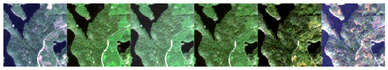
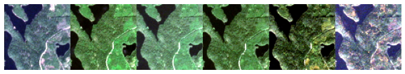
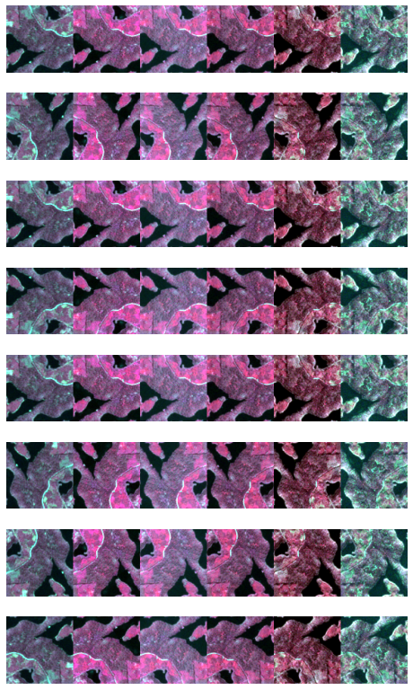
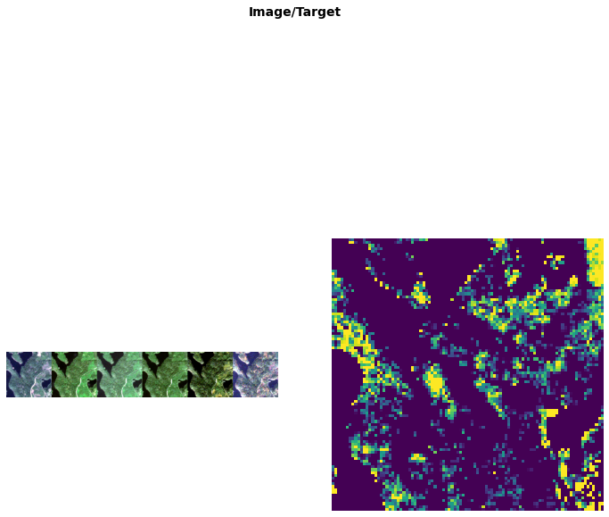

fns = ['example_data/monthly_data/may/R10C15.tif',
'example_data/monthly_data/june/R10C15.tif',
'example_data/monthly_data/july/R10C15.tif',
'example_data/monthly_data/august/R10C15.tif',
'example_data/monthly_data/september/R10C15.tif',
'example_data/monthly_data/october/R10C15.tif']
fns = [Path(f) for f in fns]Custom data used in remote sensing
Multi- and hyperspectral images, continuous masks, image time series
Opening functions
open_geotiff
open_geotiff (fn, chans=None, max_val=None)
Open geotiff and read as numpy array, then convert into tensor
open_npy
open_npy (fn, chans=None, max_val=None)
Open npy-file
show_* functions
norm
norm (vals, norm_min=None, norm_max=None, axis=(0, 1))
For visualization purposes scale image with `(vals-norm_min)/(norm_max-norm_min), with norm_min and norm_max either specified or within 0.01 and 0.99 quantiles of all values
show_mean_spectra
show_mean_spectra (img, ax=None, figsize=(3, 3), ctx=None, title=None, **kwargs)
Show average spectra graph
show_normalized_spectral_index
show_normalized_spectral_index (img, channels, ax=None, figsize=(3, 3), ctx=None, title=None, **kwargs)
Show normalized spectral index such as NDVI
show_single_channel
show_single_channel (img, channel, ax=None, figsize=(3, 3), ctx=None, title=None, **kwargs)
Visualize only channel band
show_composite
show_composite (img, channels, ax=None, figsize=(3, 3), title=None, scale=True, ctx=None, norm_min=None, norm_max=None, scale_axis=(0, 1), **kwargs)
Show three channel composite so that channels correspond to R, G and B
Both show_results and show_batch are patched with @typedispatch to work with both MultiChannelTensorImages and RegressionMasks
RegressionMask
Mask for continuous segmentation targets
RegressionMaskBlock
RegressionMaskBlock (cls=<class '__main__.RegressionMask'>, **kwargs)
Default behaviour: use all channels
RegressionMask
RegressionMask (x, **kwargs)
Class for regression segmentation tasks
MultiChannelTensorImage
TensorImage subclass for multichannel images. Works with .npy and .tif files so far.
MultiChannelTensorImage
MultiChannelTensorImage (x, **kwargs)
A Tensor which support subclass pickling, and maintains metadata when casting or after methods
MultiChannelImageBlock
MultiChannelImageBlock (cls=<class '__main__.MultiChannelTensorImage'>, chans=None, max_val=None)
Default behaviour: use all channels
using_attr
using_attr (f, attr)
Change function f to operate on attr
MultiChannelTensorImageTuple
MultiChannelTensorImageTuple
MultiChannelTensorImageTuple (x=None, *rest)
A tuple with elementwise ops and more friendly init behavior
MultiChannelImageTupleBlock
MultiChannelImageTupleBlock (cls=<class '__main__.MultiChannelTensorImageTuple'>, chans=None, max_val=None)
Default behaviour: use all channels
With MultiChannelTensorImageTuple it’s easy to process time series of images:
temporaltuple = MultiChannelTensorImageTuple.create(fns)
temporaltupleMultiChannelTensorImageTuple of 6 imagestemporaltuple.show(channels=[3,2,1], figsize=(14,10), cmap='RdYlGn_r')<AxesSubplot:>
With this kind of transform MultiChannelTensorImageTuple can be transformed into sequence of individual images
class TupleToTemporal(Transform):
order = 0
def __init__(self, split_idx=None): store_attr()
def encodes(self, o:MultiChannelTensorImageTuple):
return torch.stack(o)
def decodes(self, o:MultiChannelTensorImage):
return torch.unbind(o)tfm = TupleToTemporal()stacked = tfm.encodes(temporaltuple)
stackedMultiChannelTensorImage size=6x12x96x96unstacked = tfm.decodes(stacked)
unstacked(MultiChannelTensorImage size=12x96x96,
MultiChannelTensorImage size=12x96x96,
MultiChannelTensorImage size=12x96x96,
MultiChannelTensorImage size=12x96x96,
MultiChannelTensorImage size=12x96x96,
MultiChannelTensorImage size=12x96x96)MultiChannelTensorImageTuple(unstacked).show(channels=[3,2,1], figsize=(12,6))<AxesSubplot:>
Most of fastai transforms work out of the box
_, axs = subplots(8,1, figsize=(8,14))
for k, ax in zip(range(0,8), axs.flatten()):
DihedralItem(p=1)(temporaltuple, split_idx=0).show(channels=[7,3,2], ctx=ax, figsize=(1,6))
get_last
get_last (t)
get_all_but_last
get_all_but_last (t)
get_image_timeseries
get_image_timeseries (path, months, masks)
path = Path('example_data/monthly_data/')
files = get_image_timeseries(path, ['may', 'june', 'july', 'august', 'september', 'october'], 'masks')
dblock = DataBlock(blocks=(MultiChannelImageTupleBlock(max_val=10000),
RegressionMaskBlock),
splitter=RandomSplitter(0),
get_items=lambda x: x,
get_x=get_all_but_last, get_y=get_last,
item_tfms=[
],
batch_tfms=[
])dls = dblock.dataloaders(files[:1], bs=1)dls.show_batch(channels=[3,2,1])
MultiChannelImageDataLoaders
DataLoaders for MultiChannelImages
MultiChannelImageDataLoaders
MultiChannelImageDataLoaders (*loaders, path:str|pathlib.Path='.', device=None)
Basic wrapper around several DataLoaders.
MultiChannelImageDataLoaders.from_folder
MultiChannelImageDataLoaders.from_folder (path, chans=None, max_val=None, extensions=['.tif'], train='train', valid='valid', valid_pct=None, seed=None, vocab=None, item_tfms=None, batch_tfms=None, bs:int=64, val_bs:int=None, shuffle:bool=True, device=None)
Create from imagenet style dataset in path with train, valid, test subfolders (or provide valid_pct). Optionally list the channels to use.
| Type | Default | Details | |
|---|---|---|---|
| path | str | Path | . | Path to put in DataLoaders |
| chans | NoneType | None | |
| max_val | NoneType | None | |
| extensions | list | [‘.tif’] | |
| train | str | train | |
| valid | str | valid | |
| valid_pct | NoneType | None | |
| seed | NoneType | None | |
| vocab | NoneType | None | |
| item_tfms | NoneType | None | |
| batch_tfms | NoneType | None | |
| bs | int | 64 | Size of batch |
| val_bs | int | None | Size of batch for validation DataLoader |
| shuffle | bool | True | Whether to shuffle data |
| device | NoneType | None | Device to put DataLoaders |
MultiChannelImageDataLoaders.from_path_func
MultiChannelImageDataLoaders.from_path_func (path, fnames, label_func, chans=None, max_val=None, extensions=['.tif'], valid_pct=0.2, seed=None, item_tfms=None, batch_tfms=None, bs:int=64, val_bs:int=None, shuffle:bool=True, device=None)
Create from list of fnames in paths with label_func.
Optionally list the channels to use.
| Type | Default | Details | |
|---|---|---|---|
| path | str | Path | . | Path to put in DataLoaders |
| fnames | |||
| label_func | |||
| chans | NoneType | None | |
| max_val | NoneType | None | |
| extensions | list | [‘.tif’] | |
| valid_pct | float | 0.2 | |
| seed | NoneType | None | |
| item_tfms | NoneType | None | |
| batch_tfms | NoneType | None | |
| bs | int | 64 | Size of batch |
| val_bs | int | None | Size of batch for validation DataLoader |
| shuffle | bool | True | Whether to shuffle data |
| device | NoneType | None | Device to put DataLoaders |
MultiChannelImageDataLoaders.from_name_func
MultiChannelImageDataLoaders.from_name_func (path, fnames, label_func, chans=None, max_val=None, extensions=['.tif'], valid_pct=0.2, seed=None, item_tfms=None, batch_tfms=None, bs:int=64, val_bs:int=None, shuffle:bool=True, device=None)
Create from name attrs in list of fnames in paths with label_func. Optionally list the channels to use.
| Type | Default | Details | |
|---|---|---|---|
| path | str | Path | . | Path to put in DataLoaders |
| fnames | |||
| label_func | |||
| chans | NoneType | None | |
| max_val | NoneType | None | |
| extensions | list | [‘.tif’] | |
| valid_pct | float | 0.2 | |
| seed | NoneType | None | |
| item_tfms | NoneType | None | |
| batch_tfms | NoneType | None | |
| bs | int | 64 | Size of batch |
| val_bs | int | None | Size of batch for validation DataLoader |
| shuffle | bool | True | Whether to shuffle data |
| device | NoneType | None | Device to put DataLoaders |
MultiChannelImageDataLoaders.from_shapefile
MultiChannelImageDataLoaders.from_shapefile (path, chans=None, max_val=None, shp_fname='labels.shp', valid_pct=0.2, seed=None, fn_col=0, folder=None, suff='', label_col=1, label_delim=None, y_block=None, valid_col=None, item_tfms=None, batch_tfms=None, bs:int=64, val_bs:int=None, shuffle:bool=True, device=None)
Create from shapefile shp_fname in path readable with geopandas (GeoJSON, ESRI Shapefile) Optionally list the channels to use.
| Type | Default | Details | |
|---|---|---|---|
| path | str | Path | . | Path to put in DataLoaders |
| chans | NoneType | None | |
| max_val | NoneType | None | |
| shp_fname | str | labels.shp | |
| valid_pct | float | 0.2 | |
| seed | NoneType | None | |
| fn_col | int | 0 | |
| folder | NoneType | None | |
| suff | str | ||
| label_col | int | 1 | |
| label_delim | NoneType | None | |
| y_block | NoneType | None | |
| valid_col | NoneType | None | |
| item_tfms | NoneType | None | |
| batch_tfms | NoneType | None | |
| bs | int | 64 | Size of batch |
| val_bs | int | None | Size of batch for validation DataLoader |
| shuffle | bool | True | Whether to shuffle data |
| device | NoneType | None | Device to put DataLoaders |
MultiChannelImageDataLoaders.from_lists
MultiChannelImageDataLoaders.from_lists (path, fnames, labels, chans=None, max_val=None, valid_pct=0.2, seed:int=None, y_block=None, item_tfms=None, batch_tfms=None, bs:int=64, val_bs:int=None, shuffle:bool=True, device=None)
Create from list of fnames in path. Optionally list the channels to use.
| Type | Default | Details | |
|---|---|---|---|
| path | str | Path | . | Path to put in DataLoaders |
| fnames | |||
| labels | |||
| chans | NoneType | None | |
| max_val | NoneType | None | |
| valid_pct | float | 0.2 | |
| seed | int | None | |
| y_block | NoneType | None | |
| item_tfms | NoneType | None | |
| batch_tfms | NoneType | None | |
| bs | int | 64 | Size of batch |
| val_bs | int | None | Size of batch for validation DataLoader |
| shuffle | bool | True | Whether to shuffle data |
| device | NoneType | None | Device to put DataLoaders |
TifSegmentationDataLoaders
TifSegmentationDataLoaders
TifSegmentationDataLoaders (*loaders, path:str|pathlib.Path='.', device=None)
Needs a better name
label_from_different_folder
label_from_different_folder (fn, original_folder, new_folder)
label_with_matching_fname
label_with_matching_fname (fn, path)
Utility to match image and mask that have different folder but identical filename
TifSegmentationDataLoaders.from_label_func
TifSegmentationDataLoaders.from_label_func (path, fnames, label_func, y_block=<function MaskBlock>, chans=None, max_val=None, extensions=['.tif'], valid_pct=0.2, seed=None, splitter=None, codes=None, item_tfms=None, batch_tfms=None, bs:int=64, val_bs:int=None, shuffle:bool=True, device=None)
Create from list of fnames in paths with label_func.
| Type | Default | Details | |
|---|---|---|---|
| path | str | Path | . | Path to put in DataLoaders |
| fnames | |||
| label_func | |||
| y_block | function | MaskBlock | |
| chans | NoneType | None | |
| max_val | NoneType | None | |
| extensions | list | [‘.tif’] | |
| valid_pct | float | 0.2 | |
| seed | NoneType | None | |
| splitter | NoneType | None | |
| codes | NoneType | None | |
| item_tfms | NoneType | None | |
| batch_tfms | NoneType | None | |
| bs | int | 64 | Size of batch |
| val_bs | int | None | Size of batch for validation DataLoader |
| shuffle | bool | True | Whether to shuffle data |
| device | NoneType | None | Device to put DataLoaders |
Transforms
ScaleToFloatTensor
ScaleToFloatTensor (div=100.0, div_mask=1, split_idx=None)
Scale image values to interval 0-1